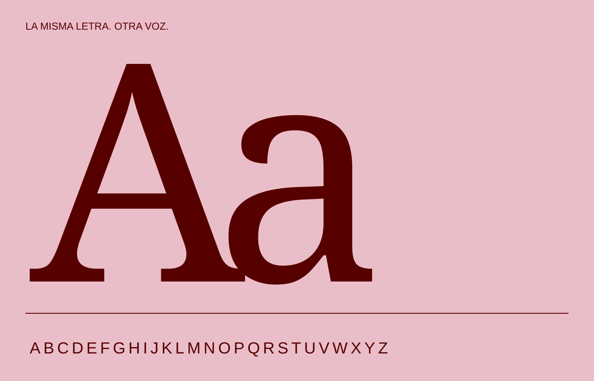
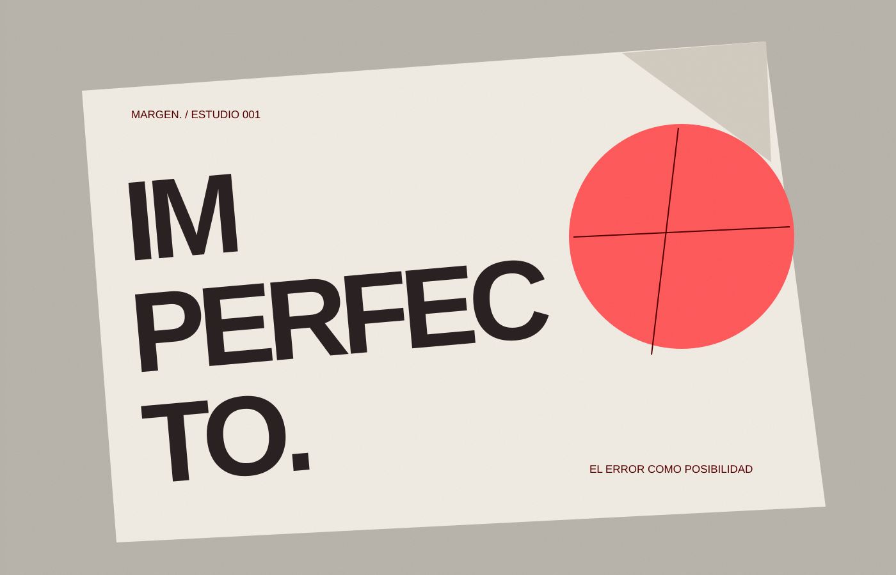
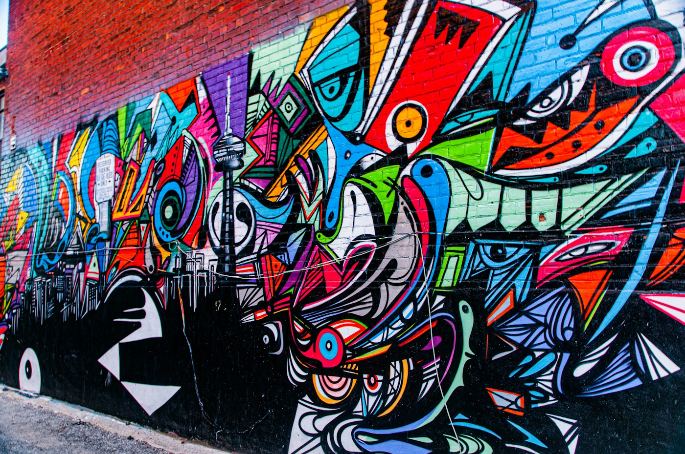
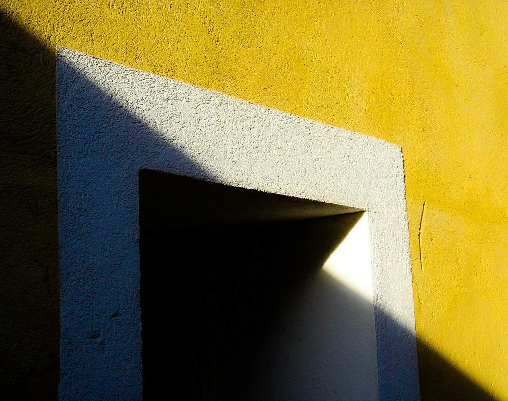
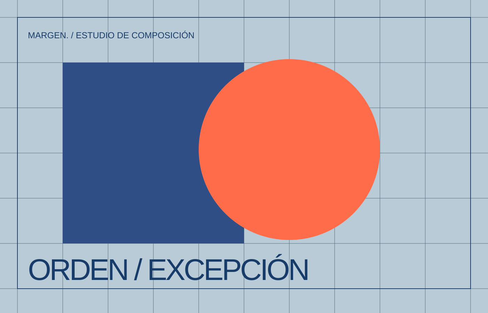
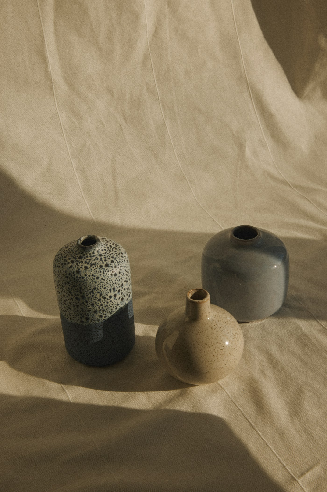
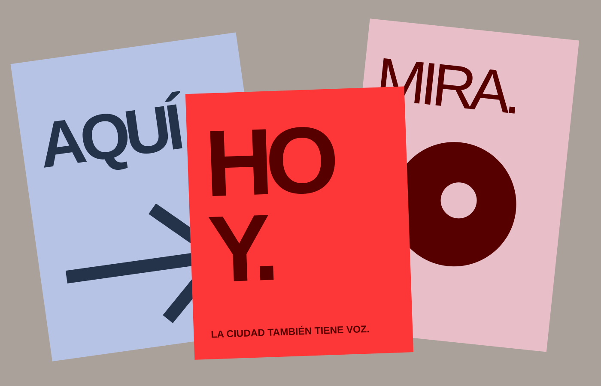

02 / Diseño / 3 MIN LECTURA
Tipografías con carácter
Cómo una letra puede cambiar el tono de lo que leemos.
Leer artículo ↗
Ideas que merecen
otra mirada.

01 / DISEÑO
Romper las reglas también puede ser una forma de diseñar.
Leer artículo ↗
Ideas que nos hacen mirar dos veces

02 / Diseño / 3 MIN LECTURA
Cómo una letra puede cambiar el tono de lo que leemos.
Leer artículo ↗
04 / Arte / 3 MIN LECTURA
Intervenciones visuales que transforman los espacios cotidianos.
Leer artículo ↗
07 / Cultura / 3 MIN LECTURA
Observar lo de siempre como si fuera la primera vez.
Leer artículo ↗
03 / Diseño / 3 MIN LECTURA
El orden también puede sorprender.
Leer artículo ↗
05 / Arte / 3 MIN LECTURA
Mirar lo cotidiano de otra forma.
Leer artículo ↗
08 / Cultura / 3 MIN LECTURA
Una ciudad también tiene voz.
Leer artículo ↗Sobre MARGEN. / Independiente 2026
Una revista de diseño, arte y cultura visual para mirar un poco más y dar por hecho un poco menos.
Conoce MARGEN ↗